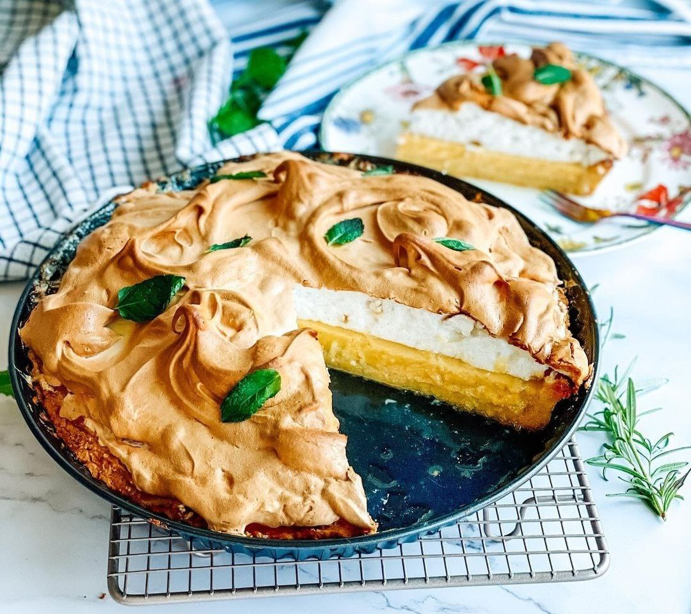

MENU
Lime Pie
| Time |
Portions |
| 1 hour |
6 pcs. |

Ingredients
420 g condensed milk
150 ml of freshly squeezed lime juice
200 g sugar
60 ml water
5 egg yolks
1 lime (zest)
3 egg whites
60 ml water
vanilla sugar
salt
shortcrust pastry of your choice
Cooking
In a large bowl, mix condensed milk with sugar and egg yolks. Add the lime juice and whisk until smooth. Stir in the lime zest.
Pour the filling into the pre-baked crust. Bake until the outer edges of the pie are firm but the center of the pie looks slightly runny, 15 to 20 minutes.
In a large bowl, use a hand mixer to beat the egg whites on high speed until they are white and frothy and have soft peaks.
Meanwhile, in a saucepan, mix ¼ cup (60 milliliters) of water and the sugar over high heat until the sugar dissolves and the syrup comes to a boil. The temperature on the thermometer should read 116°C, this is the soft ball stage - if you gently drop a little syrup into a glass of cold water, it will form a soft, pliable ball. Remove from the heat.
With the mixer running, thinly pour the hot sugar syrup into the whipped whites. Continue to whisk until the meringue holds the shape of the whisk as it rotates. The texture should be voluminous and silky. If it looks runny and sticky, continue whipping until it hardens.
Add the vanilla and salt and whisk until they are blended.
When the filling is ready, place the meringue on top of the cake. Use the back of a hot, wet spoon to create a wavy texture with peaks and troughs, or transfer the meringue to a pastry bag with a fluted nozzle and squeeze it out, starting at the outer edge and moving toward the center.
Turn on the oven to 200°. The heat of the oven varies greatly from oven to oven, so keep a close eye on the pie the entire time it is under the broiler, gently turning the tray as needed to evenly toast the meringue. Heat until the meringue peaks are golden brown, 1 to 3 minutes, depending on your oven.
Send the pie to the refrigerator until completely cooled, about 4 hours. If serving, slice hot with a wet knife.
 This is my friend Ivan, and this site is my Friend's Cookbook.
This is my friend Ivan, and this site is my Friend's Cookbook.